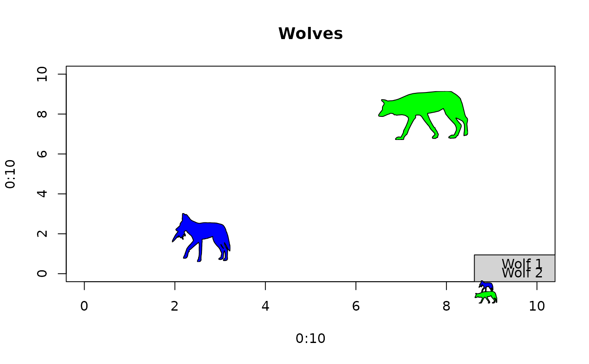

Specify existing images, taxonomic names, or PhyloPic uuids to add PhyloPic
silhouettes as a legend to an existing base R plot (like legend()).
Usage
add_phylopic_legend(
x,
y = NULL,
legend,
img = NULL,
name = NULL,
uuid = NULL,
ysize = deprecated(),
height = NULL,
color = NA,
fill = "black",
...
)Arguments
- x
numeric or character. Either the x coordinate to be used to position the legend or a keyword accepted bylegend()such as "topleft", "topright", "bottomleft", and "bottomright".- y
numeric. The y coordinate to be used to position the legend. Can beNULL(default) if using keywords inx.- legend
character. A character vector of the labels to appear in the legend.- img
A Picture or png array object, e.g., from using
get_phylopic().- name
character. A taxonomic name to be passed toget_uuid().- uuid
character. A valid uuid for a PhyloPic silhouette (such as that returned byget_uuid()orpick_phylopic()).- ysize
![[Deprecated]](figures/lifecycle-deprecated.svg) use the
use the heightargument instead.- height
numeric. Height of the legend silhouette(s). The width is determined by the aspect ratio of the original image.- color
character. Color of silhouette outline. If "original" or NA is specified, the original color of the silhouette outline will be used (usually the same as "transparent"). To remove the outline, you can set this to "transparent".- fill
character. Color of silhouette. If "original" is specified, the original color of the silhouette will be used (usually the same as "black"). Ifcoloris specified andfillis NA,colorwill be used as the fill color (for backwards compatibility). To remove the fill, you can set this to "transparent".- ...
Additional arguments passed to
legend().
Details
This function can be used to add PhyloPic silhouettes as a legend
to a base R plot. Arguments available in legend() can be used and
passed via .... Note that not all arguments in legend() are
compatible with add_phylopic_legend(). These include arguments for
modifying lines (e.g. lty, lwd, seg.len), points (e.g. pch,
pt.lwd), and shading (e.g. angle and density). This is due to
add_phylopic_legend() using add_phylopic_base() to generate the
legend symbols. However, arguments for adjusting the legend appearance
such as text (e.g. cex), legend box (e.g. bg), and color (e.g.
border) are compatible.
Examples
# Get UUIDs
uuids <- get_uuid(name = "Canis lupus", n = 2)
# Generate empty plot
plot(0:10, 0:10, type = "n", main = "Wolves")
# Add data points
add_phylopic_base(uuid = uuids,
color = "black", fill = c("blue", "green"),
x = c(2.5, 7.5), y = c(2.5, 7.5), height = 2)
# Add legend
add_phylopic_legend(uuid = uuids,
height = 0.5, color = "black", fill = c("blue", "green"),
x = "bottomright", legend = c("Wolf 1", "Wolf 2"),
bg = "lightgrey")
